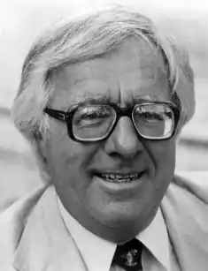

БРЕДБЕРІ, Рей (Bradbury, Ray[mond] Douglas — нар. 22.08.1920, Вокіган, штат Іллінойс) — американський письменник-фантаст.
Рей Дуглас Б. народився 22 серпня 1920 р. Друге ім'я Дуглас батьки йому дали на честь знаменитого актора кіне-ографу Дугласа Фернбекса. Його дитинство минуло у невеликому містечку Вогікані, яке згодом з'явиться у його творчості під назвою "зеленого міста" Ґрінтауна. Його батько, монтер телефонної станції, під час Великої депресії 1932 року втратив роботу, і в пошуках кращого життя сім'я перетнула країну з півночі на південь, а потім — із півдня на північ. Урешті-решт вони опинилися в Лос-Анджелесі, де Б. закінчив середню школу, і на цьому його формальна освіта закінчилася. Мешкаючи на околиці Лос-Анджелеса, поряд з будинком "фабрики мрій" — кіностудії Парамаунт, Б. мусив заробляти на прожиток продавцем газет, водночас пробуючи свої сили в літературі. В одному із інтерв'ю на запитання: "В якому віці ви почали писати? — Б. відповів: "У дванадцять років. Я не міг дозволити собі купити продовження "Марсіанського воїна" Е. Берроуза, бо ж ми були бідною сім'єю... і тоді написав свою власну версію". У серпні 1936 р. у вокіганській газеті з'явилася перша публікація майбутнього "фантаста № 1" — вірш "Пам 'яті Віллі Роджерса", а наступного року в лос-анджелеській "Антології студентських віршів за 1937 рік" була опублікована поезія "Голос смерті".
За працею і творчістю, самодіяльними театральними постановками і поетичними вечорами Б. не забував і про освіту. "У мене не було засобів, — згадував пізніше письменник, — щоб вступити в університет. Утім, університет нічого не дає для становлення особистості: письменник повинен займатися цим сам. Я відвідував публічну бібліотеку, працював там годинами, по три, чотири дні на тиждень. До двадцяти років я вже прочитав усі значні п'єси, знав американську, французьку, італійську, англійську історію, знамениті повісті та оповідання". Із 1943 р. Б. став професійним .письменником, створюючи до 52 оповідань на рік. Ранні оповідання письменника увійшли в збірки "Темний карнавал "("Dark Carnival", 1947), "Жовтнева країна" ("The October Country", 1955). Зі "страшними" оповіданнями, як, наприклад, "Вітер", "Карлик", "Коса", "Маленький убивця ", "Електростанція ", контрастують "добрі" і надзвичайно поетичні новели із циклу про казкову сімейку: "Дядечко Еинар ", "Квітневі чари ", "Повернення додому " До теми інфернального Зла, уособленого в поетичному образі "людей осені", протистояти якому здатні лише знання і безневинний дитячий сміх, Б. повернувся в одній із найкращих своїх книг — похмурій "карнавальній" феєрії "Щось страшне іде" ("Something Wicked This Way Comes", 1962). її дія відбувається у провінційному американському містечку, куди прибуває зловісний власник "смертельних атракціонів" зі своїм почетом. Ім'я власника — Пітьма, а супроти нього виступають улюблені герої Б. — підлітки та батько одного з них, міський бібліотекар. У 1947 році (27 серпня) Б. повінчався з Мар-гаріт Сюзанною Маклюр, з якою познайомився в одному з книжкових магазинів Лос-Анджелеса, де вона працювала. А за день до цього він спалив "мільйон слів" своїх забракованих творів. Спочатку прибуток сім'ї Б. складав приблизно 250 доларів на місяць: половину з них заробляв Рей, а другу половину — дружина. Справи покращувалися зі зростанням його популярності. Репутацію майстра наукової фантастики Б. принесли "Марсіанськіхроніки"'("The Martian Chronicles", 1950), де йдеться про космічну війну у близькому майбутньому. Події відбуваються у 1999—2028 pp. Земляни хочуть завоювати Марс. Для земної цивілізації, охопленої кризою, ця війна закінчується цілковитою катастрофою. Атомні вибухи спустошили материки. Уже в цьому творі, як і в наступному після нього романі "451'за Фаренгейтом"("Fahrenheit 45Г", 1953), проявилися характерні особливості прози Б. — поєднання фантастики з гострим соціальним критицизмом, яке аргументується специфікою сучасної ситуації передбачення майбутнього. 45 Г — це температура, при якій горить папір. У романі йдеться про спалювання книг, про заборону свободи слова, про загибель культури в умовах тоталітарних режимів, обрис яких чітко проступає у сьогоденні. Центральний персонаж роману — "пожежник", людина, яка спалює книги. Він говорить: "Це не почата робота. У понеділок книги Едни Міллей, в середу — Вітмена, в п'ятницю — Фолкнера. Спалювати на попіл, опісля спалювати навіть попіл. Такий наш професійний обов'язок". Людям не дозволяють думати, розмірковувати про свою долю ("Не дай, Боже, якщо вони стануть робити висновки та узагальнення"). Запроваджується інтелектуальний стандарт; людей, які читають, оголошують божевільними. Культивується тип людини, котра втратила своє обличчя, свою неповторність. Значною частиною літературного спадку Б. є новели. Більшість із них увійшли в збірки: "Людина в картинках"("The Illustrated Man", 1951), "Золотіяблука Сонця "("The Golden Apples of the Sun", 1953), "Ліки від меланхолії"("A Medicine for Melancholy", 1959), "Р — означає ракета "("R Is for Rocket", 1961), "Машини щастя" ("The Machineries of You", 1964), "К — означає космос" ("S Is for Space", 1966), "Співаю тіло електричне"(" Sing the Body Electric", 1969), "Поопівночі" ("Long After Midnight", 1976), "Духи назавжди "("The Ghosts of Forever", 1981 ), "Оповідання про динозаврів "("Dinosaur Tales", 1983), "Перетворювач Тойнбі" ("The Toynbee Convector", 1988), "Класичні оповідання 1" ("Classic Stories 1 ", 1990) і "Класичні оповідання 2" (1990) та ін. У багатьох оповіданнях Б. порушує проблему дітей та дитинства. При цьому своїх героїв не ідеалізує, а намагається розкрити обидві їхні іпостасі, добру та злу. У класичному оповіданні "Вельд"axTVí постають малими монстрами, які не зупиняються перед убивством батьків заради можливості безперешкодно дивитися у "телевізор" майбутнього. Дитяча жорстокість змальована і в оповіданнях "Дитячий майданчик "(1960) та "Все літо за один день" (1954). І, навпаки, віра в дітей, любов і людяність пронизують оповідання "Канікули", "Надвечірній берег", "Добридень і прощай", "Хлопчик-невидимець", "Ракета", "Подарунок", "Співаю тіло електричне ". Досить часто у своїх творах Б. постає пристрасним "космістом", зоряним романтиком, який сприймає майбутню космічну експансію людства швидше як поетичний символ. Піонерським пафосом пройняті оповідання "Ікар Мон-гольф'є Райт", "Кінець початкової пори", "Космонавт", "Золоті яблука Сонця Водночас майбутнє освоєння космосу може бути сповнене драматичними несподіванками та трагедіями. Звичайний метеорит спричиняє загибель героїв оповідання "Калейдоскоп ", а в оповіданні "Тут можуть з 'явитися тигри ""жива" планета змушена захищатися від хижих апетитів землян. Оригінальний космічний світ вибудуваний у невеликій повісті "Крига та полум 'я " Одна із най-пронизливіших і трагічних новел Б. — "Ревун ", у якій останній викопний ящур, який ще зберігся в океані, пливе на сигнал маяка, прийнявши його за "одноплемінника". Як і інші майстри американської художньої футурології (К. Воннегут, P. Шеклі), Б. пише про згубні для людства наслідки антигуманного техніцизму, про те, що на сучасній стадії науково-технічної революції багато її відкриттів обернулися нещастям для людей. Б. з великою художньою силою відтворив атмосферу 50-х років, коли тінь атомної війни зависла над землею. У "Марсіанських хроніках "передане почуття страху, що охопило людей, які живуть в напруженому очікуванні катастрофи. Один із персонажів — рядовий платник податків на прізвище Прічард — за будь-яку ціну хоче полетіти на Марс: "Будь-яка зі здоровим глуздом людина мріє дати драла із Землі. Не пізніше, аніж через два роки, на Землі спалахне атомна війна, і він аж ніяк не має наміру чекати, коли це трапиться". Людина хоче бути "подалі від війн і уряду, який не дає кроку ступити без дозволу, який підім'яв під себе і науку, і мистецтво!" За всієї гіркої гостроти одкровень, що містяться у ній, проза Б. поетична. В його оповіданнях і романах лунають попередження, звернені до людей, страх за їхнє майбутнє, біль і сум, і надзвичайно рідко — надія. Виникають картини спустошеної землі, висхлих водойм, самотності тих, хто випадково залишився серед живих. Зараз письменник проживає у передмісті Лос-Анджелеса, у будинку, де він з дружиною виховав чотирьох дочок. Б. — почесний доктор літератури коледжу Вітьє (штат Каліфорнія), лауреат багатьох літературних нагород і премій, а американські астронавти, побувавши на Місяці, нанесли на його карту Кратер Кульбаб, назвавши його так на честь "Кульбабового вина " — роману їхнього улюбленого письменника. Вірний ідеалам дитинства, Б. принципово ніколи не літав літаком і не кермував автомобілем. Безперечно, цілком обґрунтованою є думка В. Скурлатова про те, що "у творчості Бредбері, якому американська НФ значною мірою зобов'язана визнанням у колах літературного істеблішменту, органічно поєднуються "тверда" (природничонаукова) НФ, фентезі, готичний роман, "роман жахів", пронизана ностальгією поетична проза, а, крім того, похмурий песимізм щодо перспектив техногенної цивілізації і "дитячий" романтизм, ідеалізація звичайного життя на землі; утворений унікальний художній сплав заледве чи піддається жанровій класифікації"".